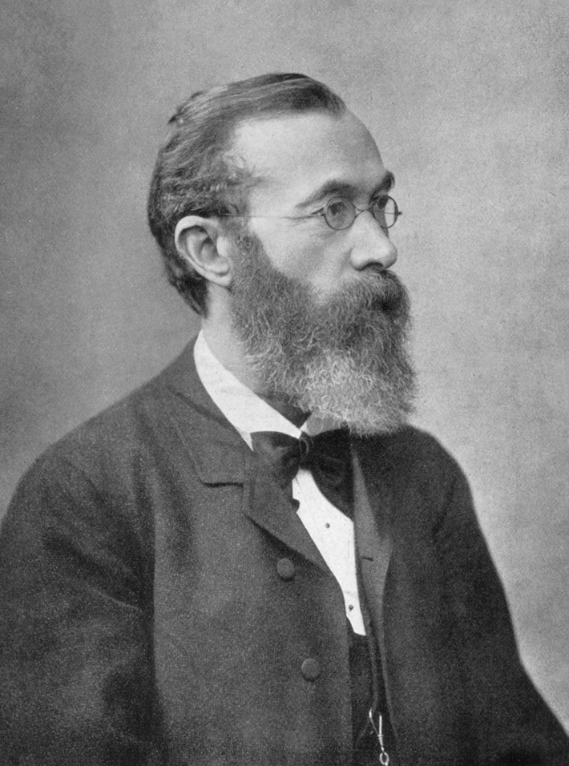

Psychology
PSYCHOLOGY
Father of Psychology
Wilhlem Maximilian Wundt
Wilhelm Maximilian Wundt (1832–1920) is known to posterity as the “father of experimental psychology”
and the founder of the first psychology laboratory (Boring 1950), whence he exerted enormous
influence on the development of psychology as a discipline, especially in the United States.

Psychology
Psychology is the scientific study of the mind and behavior. Psychologists are actively involved in studying and understanding mental processes, brain functions, and behavior.The American Psychological Association defines “psychology” as the study of mind and behavior. Using this definition, studying psychology is often associated with the experience inside the four walls of a therapist's office and the common image of someone sitting on a couch.
Definition
Psychology, scientific discipline that studies mental states and processes and behaviour in humans and other animals.
The discipline of psychology is broadly divisible into two parts: a large profession of practitioners and a smaller but growing science of mind, brain, and social behaviour. The two have distinctive goals, training, and practices, but some psychologists integrate the two.
Branches of Psychology
Clinical Psychology
Abnormla Psychology
Development Psychology
Forensic Psychology
| Author name |
Year |
| Wilhelm_Wundt |
1832 |
| Alfred_Adler |
1840 |
| John.B.Watson |
1860 |